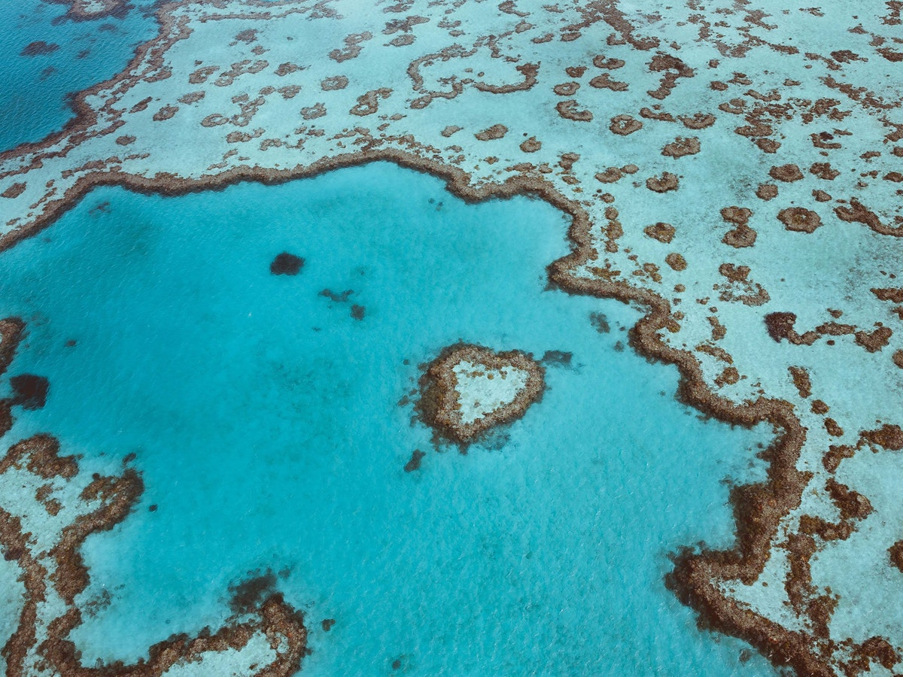
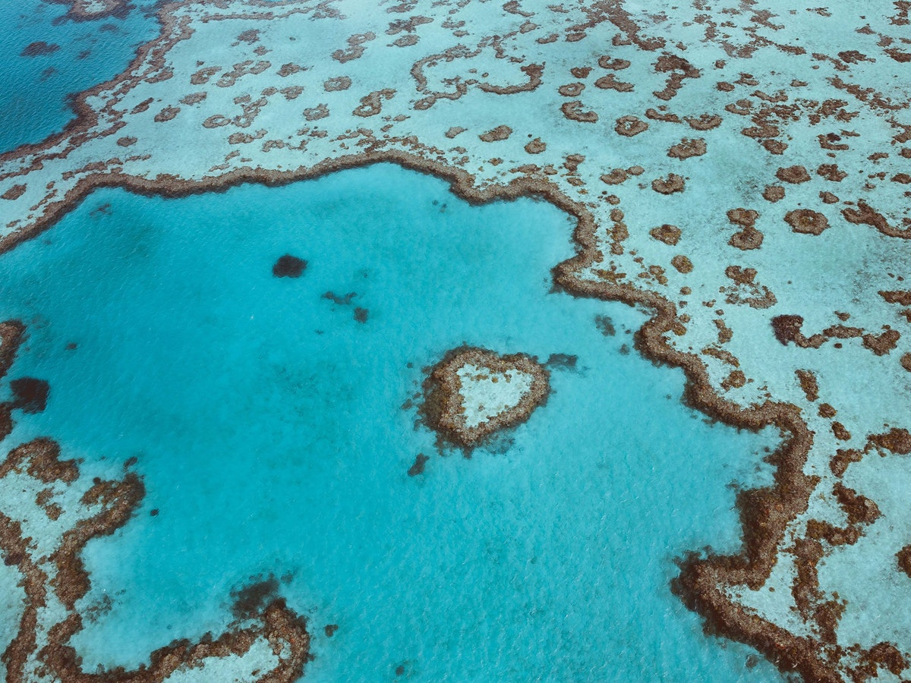

Australia is the sixth biggest country in the world and the smallest continent. It lies between the Pacific and Indian Ocean, about 3,000 km from the mainland of Asia. It is very far away from Europe and by plane it takes you over 20 hours to get there. Australia is often called Down Under because the whole continent lies south of the equator.
All the world’s climates are found on the continent—from the tropical rainforest in the north to the cool and temperate climates in the south and southeast. Australia was once a British colony and after its discovery in 1788 people from Great Britain settled there. In the past decades people from all over the world have come to Australia. Today it is a multicultural society . The continent is also one of the richest countries in the world. It produces wool and meat on one side, as well as gold, bauxite and other minerals on the other. Australians have a high standard of living .
 
